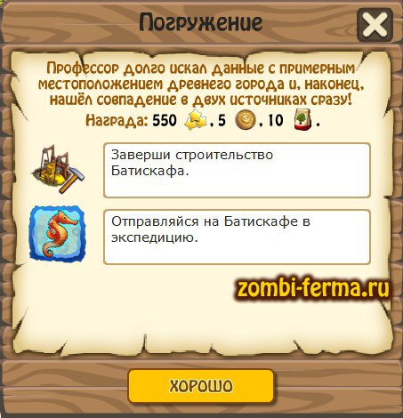

Получено: файл; исходный URL. Исходный файл из каталога задания; авторство изображения отдельно не установлено. Страница: источник.

Погружение
ВКонтакте; дата публикации и редакции не установлена- Тип
- Квест или линейка
- Версия и дата
- ВКонтакте; дата публикации и редакции не установлена
Дополнительные изображения



Данные по источнику · ВКонтакте, ZOMBIA · дата публикации и редакции не установлена
Предварительно: Содержимое списка; цели, диалоги и награды приведены в том виде, как опубликованы. Отдельная страница не обязательно проверена. Версия и дата требуют сверки.. Требуется сверка.
- Текст карточки на странице каталога
- Описание квеста : Профессор долго искал данные с примерным местоположением древнего города и, наконец, нашёл совпадение в двух источниках сразу! Ц ели квеста: 1.Заверши строительство Батискафа. 2. Отправляйся на Батискафе в экспедицию. Награда: 1. 550 Опыта 2. 5 Дублонов 3. 10 Удобрений Квест пройден: Батискаф быстро погрузился под воду, зажужжали моторы, и он начал набирать скорость. На борту царила праздничная атмосфера, но впереди был долгий путь под водой.
Данные по источнику · историческая браузерная версия, площадка не уточнена · дата страницы — 2014; дата редакции неизвестна
Предварительно: Скриншот из статьи ZF.3dn; данные могут относиться к исторической версии, их необходимо сверять с другими версиями. На изображении присутствует водяной знак zombi-ferma.ru; независимость сайтов не подтверждена.. Требуется сверка.
- Скриншот
- В разделе дополнительных изображений приведён оригинальный файл источника, включая текст целей и наград; нажмите для полного размера.
Связанные сущности
нет проверенных связей — требуется сверка.